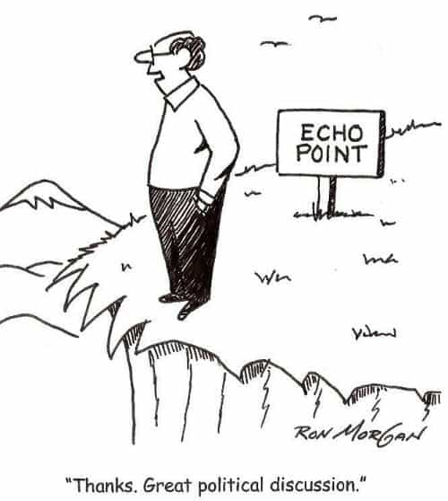
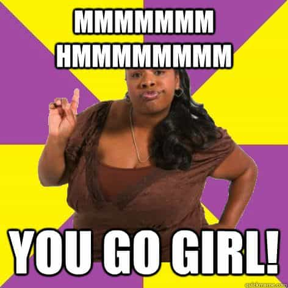

When a girl yearns to lose herself in a crowd, it indicates psychological issues no man wants in a girlfriend. As such, the only usefulness of the Women’s March—besides it giving fat girls exercise—is it shows us which girls to never date. Specifically, here’s why it’s a deal breaker if a girl attends a protest.

A girl who protests is exceedingly angry at the world. This level of anger can only be cultivated in an echo chamber. If she isolates from other people then it’s an indicator she isolates her consciousness from her latent emotions, which leads to neuroticism you’d inevitably need to handle at some point. A healthy girl wouldn’t be too angry one way or another, and would rather connect with friends than lose herself in a mob.
We’re healthy to the extent we focus on what we can control and put aside that which we don’t control. A girl who has a sense of what it means to be happy wouldn’t be online reading news, the only purpose of which is to stoke her fear and anger. The most feminine girls I’ve known have come from different backgrounds, but they all had one thing in common: limited media consumption.
We attend protests for one reason and one reason only: to cover up psychological issues we cannot manage on our own. We fabricate an impending social change because the real reason for our march is horrifying. In this sense, treat a girl who goes to a protest like a girl who has an addiction to pain killers. To anyone who isn’t in pain, vicodin doesn’t feel good—it feels like a low-grade death.

I appreciate a girl who reads—not xoJane but books. Reading indicates the ability to have and express thoughts, not opinions. It indicates the desire to learn, not consume. It indicates an interest in museums, not night clubs. It indicates the ability to sit and be okay with yourself, not get a hit from the world’s most powerful benzo—the self-righteousness of the mob.
It’s only when we begin to understand our issues that we can manage them in pro-social ways like cultivating a skill, being honest, and creating healthy friendships. Therefore, a girl who protests is unable to sit down and think about her psychological issues. Relationships are difficult enough when people have a grasp on who they are and what motivates them.
Part of being a socially-adjusted human is to understand other people have different views and to still be civil. This requires the minimum empathy to walk around in another’s shoes. We may indeed be as correct as we think we are, but listening to others quells the urge to act out.

A destructive relationship is like two crabs in a bucket, and a million woman march is a million crabs in a bucket. It’s a validation station of each other’s obesity and loneliness. A girl without healthy friendships is like a man without a purpose—she cannot be trusted, even for a woman.
When one person stomps and screams like a toddler, it’s a temper tantrum. When a thousand people stomp and scream, it’s a protest. Let’s not confuse these tantrums as being intelligent, progressive, or caring. Instead, let’s call them what they are: unhappy people who mistake strong emotions for truth.
Read More: 8 Reasons To Date A Former Fat Girl